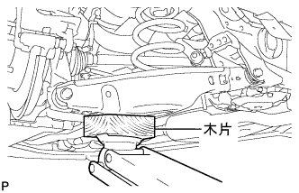
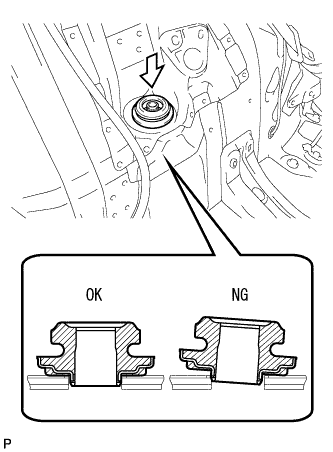
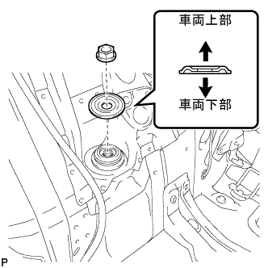
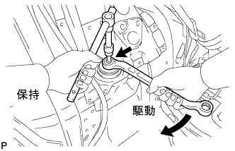
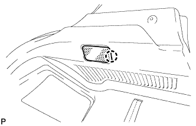
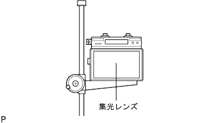

Shock Absorber Assembly Rear LH Installation |
| 1. Install Rear Spring Bumper NO.1 LH |
| 2. Temporarily Tighten Shock Absorber Assembly Rear LH |
 |
Support the rear suspension arm assembly No.2 LH with a block of wood in between.
 |
Temporarily tighten the rear shock absorber assembly LH with the bolt and nut.
| 3. Install Rear Suspension Support |
 |
Install the rear suspension support.
| 4. Install Rear Shock Absorber Cushion Retainer |
 |
Install the rear shock absorber cushion retainer.
 |
Using socket hexagon wrench 6, hold the rear shock absorber assembly LH and tighten the lock nut.
| 5. Install Rear Tire |
| 6. Stabilize Suspension |
Lower the vehicle and bounce it up and down several times to stabilize the rear suspension.
| 7. Fully Tighten Shock Absorber Assembly Rear LH |
 |
Hold the nut and turn the bolt to fully tighten the rear shock absorber assembly LH.
| 8. Install Rear Stabilizer Link Assembly LH |
 |
Temporarily tighten the rear stabilizer link assembly LH and 2 rear stabilizer cushions with the nut as shown in the illustration.
 |
Install the nut.
 |
Fully tighten the nut.
| 9. Install Height Control Sensor Sub-assembly Rear (w/ Discharge Headlight) |
 |
Install the height control sensor assembly (rear) with the 2 bolts.
 |
Connect the connector and engage the clamp.
| 10. Install Deck Trim Side Panel Assembly LH |
)| 11. Install Luggage Hold Belt Striker Assembly (LH Side Installation Position) |
)| 12. Install Room Light Assembly NO.2 |
 |
Connect the connector.
Engage the claws to install room light assembly No.2.
| 13. Install Rear Seatback Hinge Sub-assembly (LH Side Installation Position) |
)| 14. Install Deck Trim Cover Rear |
 |
Engage the 10 claws to install the deck trim cover rear.
| 15. Install Luggage Hold Belt Striker Assembly (Rear Side Installation Position) |
 |
Install the trunk (luggage compartment) hold belt striker with the bolt.
| 16. Install Deck Floor Box LH |
 |
Install the deck floor box LH with the 2 nuts.
| 17. Install Deck Floor Box RH |
 |
Insert the guide.
Install the deck floor box RH with the 2 nuts.
| 18. Install Rear Floor Mat Rear |
 |
Install the rear floor mat rear.
| 19. Install Package Tray Trim Panel Assembly |
 |
Engage the package tray trim panel assembly with the 2 pins.
Connect the 2 suspenders to the package tray trim garnish hooks, and install the package tray trim panel assembly.
| 20. Install Rear Door Opening Trim Weatherstrip LH |
 |
Align the paint mark (yellow) on the weatherstrip with the arrow on the body side shown in the illustration, and install the rear door opening trim weatherstrip LH.
| 21. Install Rear Door Scuff Plate LH |
)| 22. Install Rear Seat Assembly LH |
 |
Set the rear seat assembly LH in the vehicle, and install the 2 rear side bolts in the order inner → outer.
 |
Raise the seatback, and install the 2 front side bolts of the rear seat assembly LH in the order inner → outer.
| 23. Install Rear Seat Headrest Assembly |
| 24. Install Rear Seat Cushion Hinge Cover NO.2 |
 |
Engage the 4 claws to install the rear seat cushion hinge cover NO.2.
| 25. Install Rear Seat Cushion Hinge Cover NO.1 |
 |
Engage the 4 claws and install the rear seat cushion hinge cover NO.1.
| 26. Inspect and Adjust Rear Wheel Alignment |
)| 27. Connect Battery Negative Terminal |
| 28. Headlight Leveling ECU Assembly Initialization Procedure |
)| 29. Preparation for Headlight Aiming |
)Adjust the tire pressure to the specified value.
Have 1 person sit in the driver seat.
Start the engine and keep the battery in a charging condition.
 |
Set the leveling switch dial to 0. (Halogen type headlight)
| 30. Headlight Aiming Adjustment (Using Low Beam Tester) |
Set the distance between the tester and the headlight lens to the tester's specified value.
Position the tester so that it squarely faces the vehicle.
 |
Set up the headlight tester.
Set the angle adjustment knobs of the tester to 10cm downward and 0cm left/right.
 |
Align the condenser lens of the tester with the center of the headlight.
| Mark | |
|---|---|
| A | Low Beam Bulb Center |
| B | High Beam Bulb Center |
Take measures so that the light from the other headlight does not affect the measurement.
Turn on the headlights on low beam.
Adjust the low beam aim according to the instruction manual of the headlight tester used.

| 31. Headlight Luminous Intensity Inspection (Using Low Beam Tester) |
After adjusting the aim, inspect the luminous intensity with the headlight tester.
| 32. Headlight Aiming Adjustment (Using Low Beam Screen) |
Prepare a piece of thick white paper.
 |
Prepare an aiming screen as shown in the illustration. (Discharge type headlight)
 |
Prepare an aiming screen as shown in the illustration. (Halogen type headlight)
 |
Set the distance between the tester and headlight lens to 3m.
Position the tester so that it squarely faces the vehicle.
|
Set up the headlight tester.
Align the center of the tester condenser lens with the headlight center.
| Mark | |
|---|---|
| A | Low Beam Bulb Center |
| B | High Beam Bulb Center |
Align the center hole of the adjustment screen with the center of the tester condenser lens, and attach it with tape or equivalent.
Turn on the headlights on low beam.
If it deviates significantly from the reference line, adjust the low beam aim so that the cut-off line aligns with the reference line.
| 33. Headlight Luminous Intensity Inspection (Using Low Beam Screen) |
Set the distance between the tester and the headlight lens to the tester's specified value.
Position the tester so that it squarely faces the vehicle.
Set up the headlight tester.
Set the angle adjustment knobs of the tester to 11cm downward and 23cm to the left.
|
Align the condenser lens of the tester with the center of the headlight.
| Mark | |
|---|---|
| A | Low Beam Bulb Center |
| B | High Beam Bulb Center |
Take measures so that the light from the other headlight does not affect the measurement.
Turn on the headlights on low beam.
After aiming adjustment, inspect with the headlight tester.
| 34. Headlight Aiming Adjustment (Using High Beam Tester) |
Set the distance between the tester and the headlight lens to the tester's specified value.
Position the tester so that it squarely faces the vehicle.
Set up the headlight tester.
Set the angle adjustment knobs of the tester to 1/5cm of the headlight center height downward and 0cm for both left and right. (LH headlight)
Set the angle adjustment knobs of the tester to 1/5cm of the headlight center height downward and 5cm to the left. (RH headlight)
|
Align the condenser lens of the tester with the headlight center.
| Mark | |
|---|---|
| A | Low Beam Bulb Center |
| B | High Beam Bulb Center |
Take measures so that the light from the other headlight does not affect the measurement.
Turn on the headlights with high beam.
Adjust the high beam aim according to the handling procedure of the headlight tester used.
| 35. Headlight Luminous Intensity Inspection (Using High Beam Tester) |
After adjusting the aim, inspect the luminous intensity with the headlight tester.
| 36. Setting Procedure When Disconnecting/Reconnecting Battery Terminal |
)